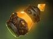
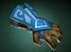

Даёт +10 к урону, когда владелец имеет больше 50% здоровья, и +5 к броне, когда владелец имеет меньше 50% здоровья.
Даёт +15 к скорости атаки, если в радиусе 900 есть вражеские герои.Новый нейтральный предмет 2-го разряда Даёт +20 к скорости передвижения
Кратко и по существу:
Предметы делятся на пять разрядов. Выпадение предмета определенного разряда зависит от игрового времени.
Шанс выпадения вычисляется псевдослучайным распределением и рассчитывается индивидуально для каждой команды и каждого ранга. Предметы большего разряда рассчитываются первыми.
Шанс выпадения меняется только если в радиусе 750 рядом с убитым крипом был герой (исключая иллюзии и клонов).
Нейтральные предметы не падают если:
Убивший игрок произносит Boots of Travel icon.png Boots of Travel или Town Portal Scroll icon.png Town Portal Scroll.
В радиусе 1200 от убитого крипа есть вражеский герой. Клоны и иллюзии не учитываются.
Крип был подчинен игроком до убийства. Он должен быть нейтральным, чтобы с него могли выпасть предметы.
Для каждой команды один и тот же предмет может упасть лишь раз.
Для каждой команды может упасть максимум пять предметов из разряда.
Шанс выпадения с древних крипов в 3 раза выше.
При выпадении нейтральный предмет быстро летит к герою который выбил его, приземляясь рядом с ним.
Каждая команда имеет отдельный тайник для нейтральных предметов в области фонтана. Этот тайник доступен всем игрокам команды. Нейтральный предмет можно поместить в тайник выкладыванием его на землю в области фонтана или телепортацией в тайник с помощью меню по правому клику. В отличии от обычного тайника, нейтральные предметы можно помещать в их тайник с любой точки карты. Не смотря на визуальный эффект, телепортация происходит мгновенно.
Тайник может содержать до 5 нейтральных предметов каждого разряда. В тайник можно поместить предметы лишь найденные командой. Нейтральные предметы украденные у врага нельзя поместить в тайник, вместо этого кнопка телепортации отправит их к фонтану.
Кроме хранения предметов, тайник также отображает текущее состояние всех нейтральных предметов найденных командой:
Когда предмет в тайнике, то отобразится обыкновенная иконка, состояние не отобразится.
Когда предмет экипирован игроком, то иконка предмета станет затемнённой, состояние отобразится как «АКТИВНО», также будет показана иконка героя.
Когда предмет в ранце у игрока, то иконка предмета станет затемнённой, состояние отобразится как «В РАНЦЕ», также будет показана затемнённая иконка героя.
Когда предмет в тайнике игрока, то иконка предмета станет затемнённой, состояние отобразится как «В ТАЙНИКЕ», также будет показана затемнённая иконка героя.
Когда предмет в курьере игрока, то иконка предмета станет затемнённой, состояние отобразится как «У КУРЬЕРА», также будет показана затемнённая иконка героя.
Когда предмет на земле, или украден врагом, то иконка предмета станет затемнённой, состояние отобразится как «НЕИЗВЕСТНО».